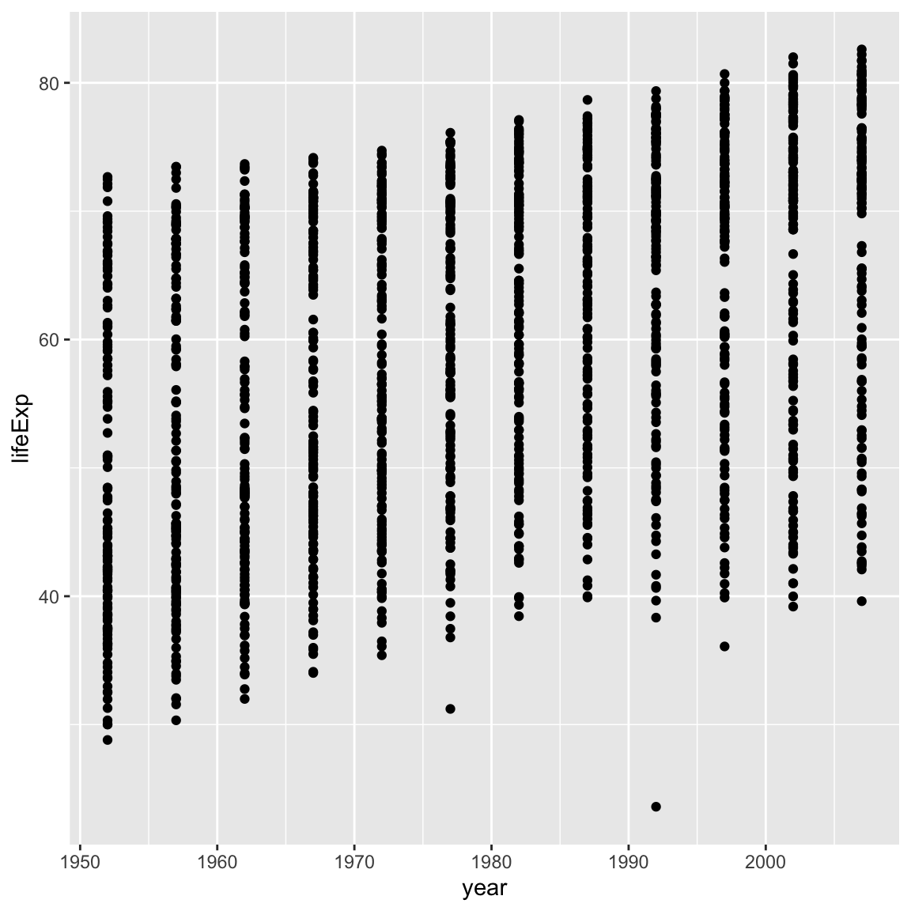
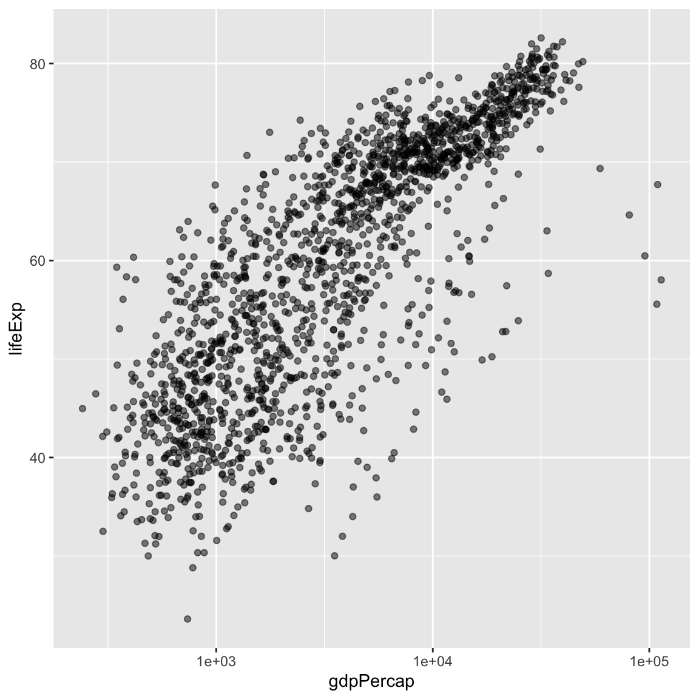
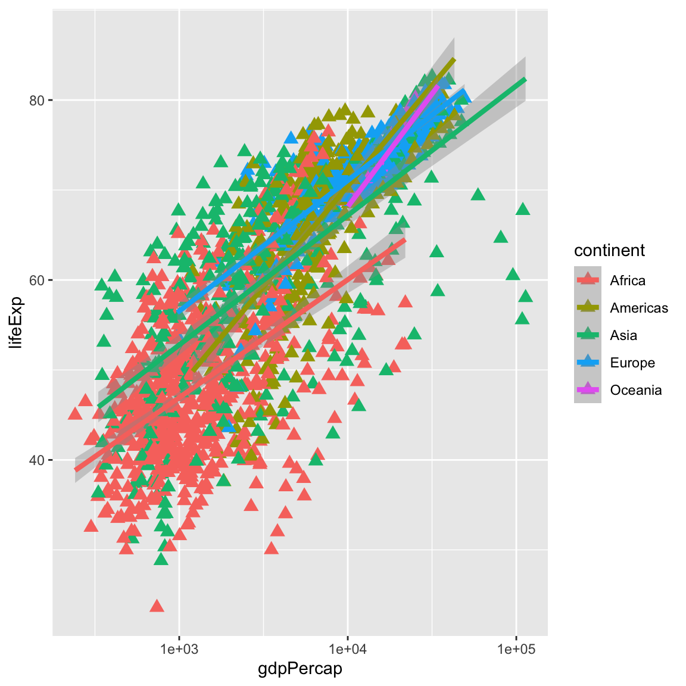
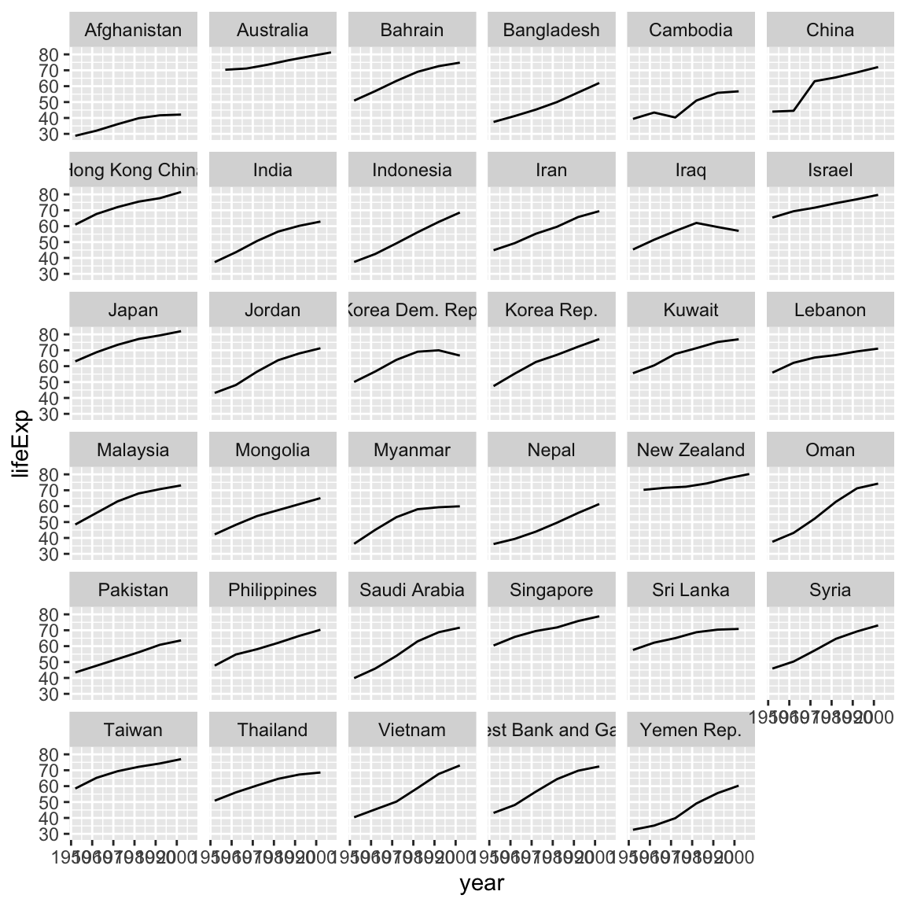
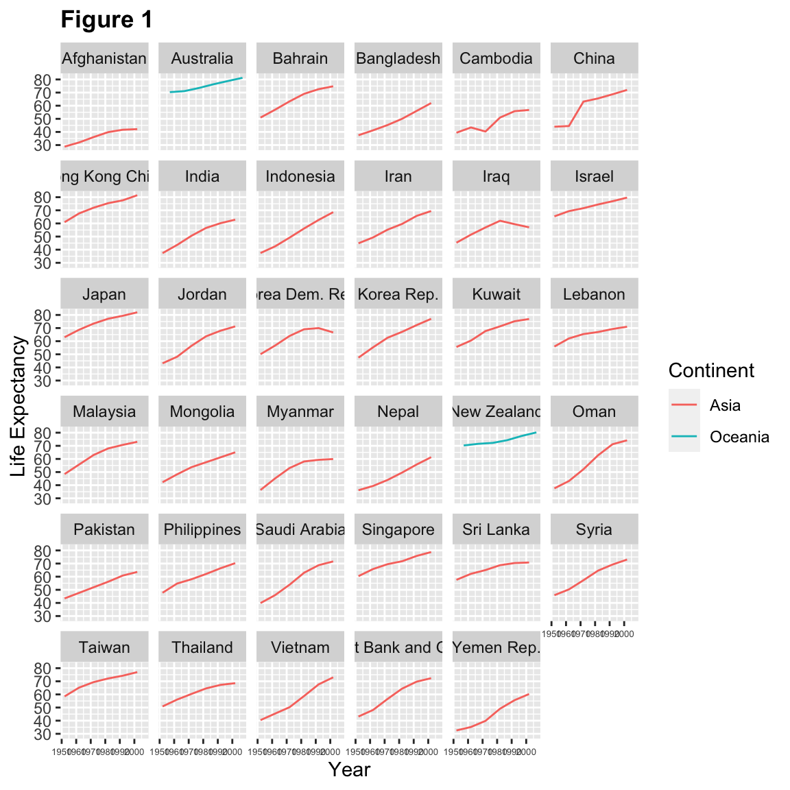
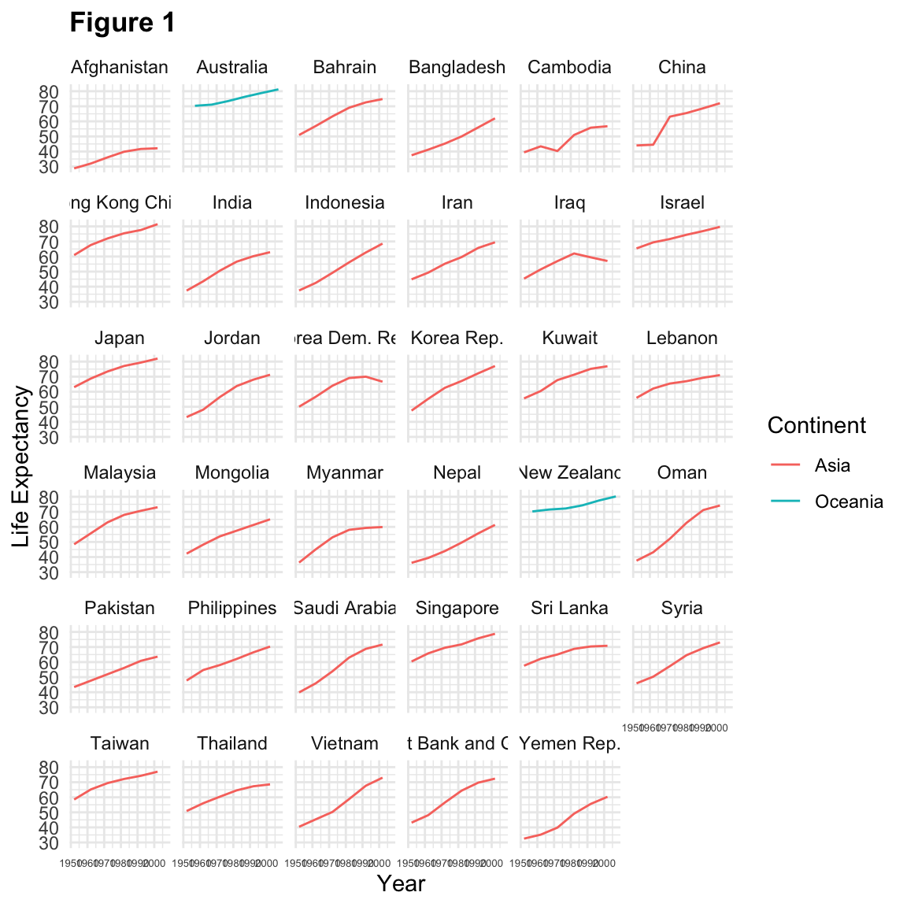

Chapter 6 Creating Publication-Quality Graphics with ggplot2
Plotting is one of the best ways to quickly explore your data and the various relationships between variables.
There are three main plotting systems in R,
the base plotting system, the lattice
package, and the ggplot2 package.
Today we’ll be learning about the ggplot2 package, because
it is the most effective for creating publication-quality
graphics.
ggplot2 is built on the grammar of graphics, the idea that any plot can be
expressed from the same set of components: a data set, a
coordinate system, and a set of geometric objects or geoms—the visual representation of data points.
The key to understanding ggplot2 is thinking about a plot or figure in layers.
This idea may be familiar to you if you have used image editing programs like Photoshop, Illustrator, or
Inkscape.
6.1 Getting started
Let’s start off by installing and loading the the ggplot2 package:
install.packages("ggplot2")
library(ggplot2)And loading our gapminder data:
library(readr)
gapminder <- read_csv("data/gapminder_data.csv")Rows: 1704 Columns: 6── Column specification ────────────────────────────────────────────────────────
Delimiter: ","
chr (2): country, continent
dbl (4): year, pop, lifeExp, gdpPercap
ℹ Use `spec()` to retrieve the full column specification for this data.
ℹ Specify the column types or set `show_col_types = FALSE` to quiet this message.gapminder# A tibble: 1,704 × 6
country year pop continent lifeExp gdpPercap
<chr> <dbl> <dbl> <chr> <dbl> <dbl>
1 Afghanistan 1952 8425333 Asia 28.8 779.
2 Afghanistan 1957 9240934 Asia 30.3 821.
3 Afghanistan 1962 10267083 Asia 32.0 853.
4 Afghanistan 1967 11537966 Asia 34.0 836.
5 Afghanistan 1972 13079460 Asia 36.1 740.
6 Afghanistan 1977 14880372 Asia 38.4 786.
7 Afghanistan 1982 12881816 Asia 39.9 978.
8 Afghanistan 1987 13867957 Asia 40.8 852.
9 Afghanistan 1992 16317921 Asia 41.7 649.
10 Afghanistan 1997 22227415 Asia 41.8 635.
# … with 1,694 more rowsNow let’s jump right into making an example ggplot2 plot:
ggplot(data = gapminder, mapping = aes(x = gdpPercap, y = lifeExp)) +
geom_point()
So the first thing we do is call the ggplot function. This function lets R
know that we’re creating a new plot, and any of the arguments we give the
ggplot function are the global options for the plot: they apply to all
layers on the plot.
We’ve passed in two arguments to ggplot. First, we tell ggplot what data we
want to show on our figure, in this example the gapminder data we read in
earlier. For the second argument—mapping—we passed in the aes function, which
tells ggplot how variables in the data map to aesthetic properties of
the figure, in this case the x and y locations. Here we told ggplot we
want to plot the “gdpPercap” column of the gapminder data frame on the x-axis, and
the “lifeExp” column on the y-axis. Notice that we didn’t need to explicitly
pass aes these columns (e.g. x = gapminder[, "gdpPercap"]), this is because
ggplot is smart enough to know to look in the data for that column!
By itself, the call to ggplot isn’t enough to draw a figure:
ggplot(data = gapminder, mapping = aes(x = gdpPercap, y = lifeExp))
We need to tell ggplot how we want to visually represent the data, which we
do by adding a new geom layer. In our example, we used geom_point, which
tells ggplot we want to visually represent the relationship between x and
y as a scatterplot of points:
ggplot(data = gapminder, mapping = aes(x = gdpPercap, y = lifeExp)) +
geom_point()
Recap: Every ggplot2 plot has three key components: (1) data, (2) a set of aesthetic mappings between variables in the data and visual properties on the plot, and (3) at least one layer, created with a geom function.
Challenge 1
Modify the example so that the figure shows how life expectancy has changed over time:
ggplot(data = gapminder, mapping = aes(x = gdpPercap, y = lifeExp)) + geom_point()Hint: the gapminder dataset has a column called “year”, which should appear on the x-axis.
Solution to challenge 1
Here is one possible solution:
ggplot(data = gapminder, mapping = aes(x = year, y = lifeExp)) + geom_point()
Challenge 2
In the previous examples and challenge we’ve used the
aesfunction to tell the scatterplot geom about the x and y locations of each point. Another aesthetic property we can modify is the point colour. Modify the code from the previous challenge to colour the points by the “continent” column. What trends do you see in the data? Are they what you expected?Solution to challenge 2
ggplot(data = gapminder, mapping = aes(x = year, y = lifeExp, colour = continent)) + geom_point()

6.2 Layers
Using a scatterplot probably isn’t the best for visualizing change over time.
Instead, let’s tell ggplot to visualize the data as a line plot:
ggplot(data = gapminder, mapping = aes(x = year, y = lifeExp, colour = continent)) +
geom_line()
Instead of adding a geom_point layer, we’ve added a geom_line layer, however it looks like the lines are connecting the wrong points? We need to add the group aesthetic, which tells ggplot to draw a line for each country.
ggplot(data = gapminder, mapping = aes(x = year, y = lifeExp, colour = continent, group = country)) +
geom_line()What if we want to visualize both lines and points on the plot? We can simply add another layer to the plot:
ggplot(data = gapminder, mapping = aes(x = year, y = lifeExp, colour = continent, group = country)) +
geom_line() +
geom_point()
It’s important to note that each layer is drawn on top of the previous layer. In this example, the points have been drawn on top of the lines. Here’s a demonstration:
ggplot(data = gapminder, mapping = aes(x = year, y = lifeExp, group = country)) +
geom_line(mapping = aes(colour = continent)) +
geom_point()
In this example, the aesthetic mapping of colour has been moved from the
global plot options in ggplot to the geom_line layer so it no longer applies
to the points. Now we can clearly see that the points are drawn on top of the
lines.
Tip: Setting an aesthetic to a value instead of a mapping
So far, we’ve seen how to use an aesthetic (such as colour) as a mapping to a variable in the data. For example, when we use
geom_line(mapping = aes(colour = continent)), ggplot will give a different colour to each continent. But what if we want to change the colour of all lines to blue? You may think thatgeom_line(mapping = aes(colour = "blue"))should work, but it doesn’t. Since we don’t want to create a mapping to a specific variable, we simply move the colour specification outside of theaes()function, like this:geom_line(colour = "blue").
ggplot(data = gapminder, mapping = aes(x = year, y = lifeExp, group = country)) +
geom_line(colour = "blue") +
geom_point()
Challenge 3
Switch the order of the point and line layers from the previous example. What happened?
Solution to challenge 3
ggplot(data = gapminder, mapping = aes(x = year, y = lifeExp, group = country)) + geom_point() + geom_line(mapping = aes(colour = continent))
The lines now get drawn over the points!

6.3 Transformations and statistics
ggplot2 also makes it easy to overlay statistical models over the data. To
demonstrate we’ll go back to our first example:
ggplot(data = gapminder, mapping = aes(x = gdpPercap, y = lifeExp)) +
geom_point()
Currently it’s hard to see the relationship between the points due to some strong outliers in GDP per capita. We can change the scale of units on the x axis using the scale functions. These control the mapping between the data values and visual values of an aesthetic. We can also modify the transparency of the points, using the alpha function, which is especially helpful when you have a large amount of data which is very clustered.
ggplot(data = gapminder, mapping = aes(x = gdpPercap, y = lifeExp)) +
geom_point(alpha = 0.5) +
scale_x_log10()
The log10 function applied a transformation to the values of the gdpPercap
column before rendering them on the plot, so that each multiple of 10 now only
corresponds to an increase in 1 on the transformed scale, e.g. a GDP per capita
of 1,000 is now 3 on the y axis, a value of 10,000 corresponds to 4 on the y
axis and so on. This makes it easier to visualize the spread of data on the
x-axis.
Tip Reminder: Setting an aesthetic to a value instead of a mapping
Notice that we used
geom_point(alpha = 0.5). As the previous tip mentioned, using a setting outside of theaes()function will cause this value to be used for all points, which is what we want in this case. But just like any other aesthetic setting, alpha can also be mapped to a variable in the data. For example, we can give a different transparency to each continent withgeom_point(mapping = aes(alpha = continent)).
We can fit a simple relationship to the data by adding another layer, geom_smooth:
ggplot(data = gapminder, mapping = aes(x = gdpPercap, y = lifeExp)) +
geom_point() +
scale_x_log10() +
geom_smooth(method = "lm")`geom_smooth()` using formula 'y ~ x'We can make the line thicker by setting the size aesthetic in the
geom_smooth layer:
ggplot(data = gapminder, mapping = aes(x = gdpPercap, y = lifeExp)) +
geom_point() +
scale_x_log10() +
geom_smooth(method = "lm", size = 1.5)`geom_smooth()` using formula 'y ~ x'There are two ways an aesthetic can be specified. Here we set the size
aesthetic by passing it as an argument to geom_smooth. Previously in the
lesson we’ve used the aes function to define a mapping between data
variables and their visual representation.
Challenge 4a
Modify the colour and size of the points on the point layer in the previous example.
Hint: do not use the
aesfunction.Solution to challenge 4a
ggplot(data = gapminder, mapping = aes(x = gdpPercap, y = lifeExp)) + geom_point(size = 3, colour = "orange") + scale_x_log10() + geom_smooth(method = "lm", size = 1.5)`geom_smooth()` using formula 'y ~ x'

Challenge 4b
Modify your solution to Challenge 4a so that the points are now a different shape and are coloured by continent with new trendlines.
Hint: The colour argument can be used inside the aesthetic.
Solution to challenge 4b
ggplot(data = gapminder, mapping = aes(x = gdpPercap, y = lifeExp, colour = continent)) + geom_point(size = 3, shape = 17) + scale_x_log10() + geom_smooth(method = "lm", size = 1.5)`geom_smooth()` using formula 'y ~ x'
6.4 Multi-panel figures
Earlier we visualized the change in life expectancy over time across all countries in one plot. Alternatively, we can split this out over multiple panels by adding a layer of facet panels.
For this exercise we will use a subset of the gapminder data. If you are already familiar with subsetting a data frame with square brackets or the dplyr package, you can subset the gapminder data frame:
asia_oceania <- gapminder[gapminder$continent == c("Asia", "Oceania"),]
library(dplyr)
asia_oceania <- filter(gapminder, continent %in% c("Asia", "Oceania"))Or you can use the read_csv function and read in this subset of the gapminder data already provided in the /data folder:
asia_oceania <- read_csv("data/gapminder_asia_oceania.csv")Rows: 210 Columns: 6── Column specification ────────────────────────────────────────────────────────
Delimiter: ","
chr (2): country, continent
dbl (4): year, pop, lifeExp, gdpPercap
ℹ Use `spec()` to retrieve the full column specification for this data.
ℹ Specify the column types or set `show_col_types = FALSE` to quiet this message.ggplot(data = asia_oceania, mapping = aes(x = year, y = lifeExp)) +
geom_line() +
facet_wrap(facets = vars(country))
The facet_wrap layer took the function vars() as its facet argument. This tells R to draw a panel for each unique value in the variable country of the gapminder dataset.
6.5 Modifying text
To clean this figure up for a publication we need to change some of the text elements. The x-axis is too cluttered, and the y axis should read “Life Expectancy”, rather than the column name in the data frame.
We can do this by adding a couple of different layers. The theme layer
controls the axis text, and overall text size. Labels for the axes, plot
title and any legend can be set using the labs function. Legend titles
are set using the same names we used in the aes specification. Thus below
the colour legend title is set using colour = "Continent", while the title
of a fill legend would be set using fill = "MyTitle".
ggplot(data = asia_oceania, mapping = aes(x = year, y = lifeExp, colour = continent)) +
geom_line() +
facet_wrap(facets = vars(country)) +
labs(
x = "Year", # x axis title
y = "Life Expectancy", # y axis title
title = "Figure 1", # main title of figure
colour = "Continent" # title of legend
) +
theme(axis.text.x = element_text(size = 5),
plot.title = element_text(face = "bold"))
Tip
Note that we apply a “theme” definition to customize the x-axis label sizes to maintain readability. Nearly everything in ggplot2 is customizable.
We can also use one of the many built in themes in ggplot2. Like geom layers, each theme each layer is drawn on top of the previous theme layer.
ggplot(data = asia_oceania, mapping = aes(x = year, y = lifeExp, colour = continent)) +
geom_line() +
facet_wrap(facets = vars(country)) +
labs(
x = "Year", # x axis title
y = "Life Expectancy", # y axis title
title = "Figure 1", # main title of figure
colour = "Continent" # title of legend
) +
theme_minimal() +
theme(axis.text.x = element_text(size = 5),
plot.title = element_text(face = "bold"))
6.6 Exporting the plot
The ggsave() function allows you to export a plot created with ggplot2. You can specify the dimension and resolution of your plot by adjusting the appropriate arguments (width, height and dpi) to create high quality graphics for publication. In order to save the plot from above, we first assign it to a variable lifeExp_plot, then tell ggsave to save that plot in png format to a directory called results. (Make sure you have a results/ folder in your working directory.)
lifeExp_plot <- ggplot(data = asia_oceania, mapping = aes(x = year, y = lifeExp, colour = continent)) +
geom_line() +
facet_wrap(facets = vars(country)) +
labs(
x = "Year", # x axis title
y = "Life expectancy", # y axis title
title = "Figure 1", # main title of figure
colour = "Continent" # title of legend
) +
theme(axis.text.x = element_text(size=10),
plot.title = element_text(face = "bold"))
ggsave(filename = "results/lifeExp.png", plot = lifeExp_plot, width = 18, height = 16, units = "cm")
ggsave(filename = "results/lifeExp_widetv.png", plot = lifeExp_plot, width = 13.33, height = 7.5)There are two nice things about ggsave. First, it defaults to the last plot, so if you omit the plot argument it will automatically save the last plot you created with ggplot. Secondly, it tries to determine the format you want to save your plot in from the file extension you provide for the filename (for example .png or .pdf). If you need to, you can specify the format explicitly in the device argument.
This is a taste of what you can do with ggplot2. RStudio provides a
really useful cheat sheet of the different layers available, and more
extensive documentation is available on the ggplot2 website.
Finally, if you have no idea how to change something, a quick Google search will
usually send you to a relevant question and answer on Stack Overflow or the RStudio Community website with reusable
code to modify. Finally, there are many websites that provide examples of ggplot2 plots with open code, for example The R Graph Gallery.